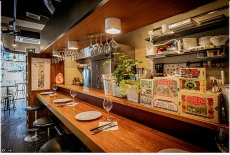

Harajuku NEW
B1F Champs-Élysées Harajuku, 4-28-14 Jingumae, Shibuya-ku, Tokyo
| Weekday lunch | 12:00–16:00（L.O. 15:00） |
| Weekday dinner | 17:00–22:00（L.O. 21:00） |
| Sat & Sun | 12:00–22:00（L.O. 21:00） |
Closed on Wednesdays
 We were the first restaurant in Asia to receive gluten-free certification.
We were the first restaurant in Asia to receive gluten-free certification.
Our goal is to bring smiles to everyone who needs gluten-free food.
We may close early if we sell out.
| Weekday lunch | 12:00–16:00（L.O. 15:00） |
| Weekday dinner | 17:00–22:00（L.O. 21:00） |
| Sat & Sun | 12:00–22:00（L.O. 21:00） |
| Lunch | 12:00–16:00（L.O. 15:00） |
| Dinner | 17:00–22:00（L.O. 20:30） |
| Breakfast | 7:00–9:30（L.O. 9:00） |
| Lunch | 12:00–16:00（L.O. 15:00） |
| Dinner | 17:00–22:00（L.O. 20:30） |


We were the first restaurant in Asia to receive gluten-free certification.
Every dish and drink is made without wheat, barley or rye.
If you have multiple food allergies, please let our staff know.
Some ingredients are produced in facilities that also handle wheat. Please ask us if you have any questions.
First GIG-certified Product of the Year
Product of the Year Food Action Nippon
Food Action Nippon Tripadvisor
TripadvisorFor parties, meetings and events — so everyone can enjoy the same meal, worry-free.
 View flyerTap to enlarge
View flyerTap to enlarge
glutenfree@glutenfree.co.jp


Founder of Asia's first GFFS-certified restaurant / Gluten-free consultant
First 30 minutes free · Online consultations available
Book a free 30-minute consultation